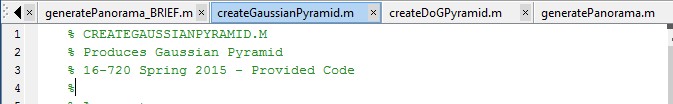
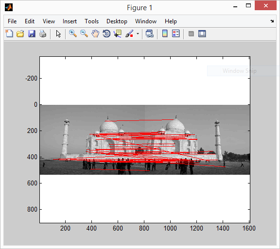
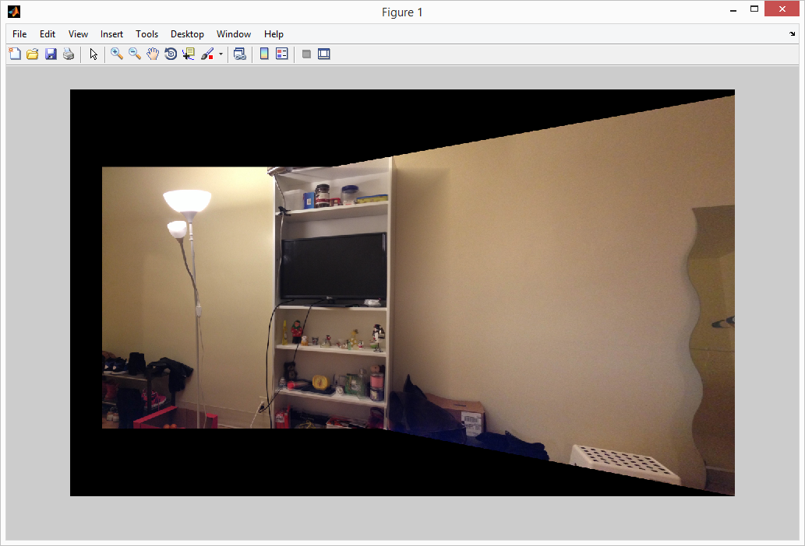

Matlab Code Sample
Anqi Bai
About:
The code sample is taken from the Computer Vision course homework I finished when I studied at Carnegie Mellon University. Some scripts are provided as course material, and they will have comments (as shown below) at the beginning of the M file. I don't know the exact ratio, but I'm sure I wrote more than 90% of the code in this folder.
Files:
/data : images, and hand-selected corresponding points in 'tajPts.mat'. /matlab : functions and scripts for function tests;/matlab/using_BRIEF : BRIEF descriptors calculation and visualization; /matlab/imageStitching : files for image stitching;How to test:
The following named scripts can be run directly. And the result screenshots are shown.
run_plotMatchesForBrief
Compute BRIEF descriptors of two images. Images are taken via the same camera with only rotation in position (no translation). Calculate the matches from two sets of the descriptors, and plot the matches(corresponding features in the images).
run_imageStitching_handSelectFeatures
Image stitching with pre-selected feature points. A linear system is solved to find the planar homography matrix.

run_imageStitching_autoSelectFeatures
Matlab computer vision toolbox is used to find and match features. RANSAC is used to get the best estimation of the planar homography matrix.
